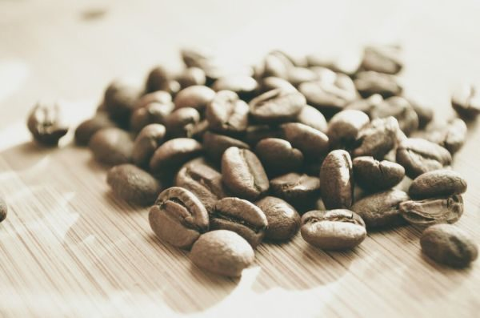
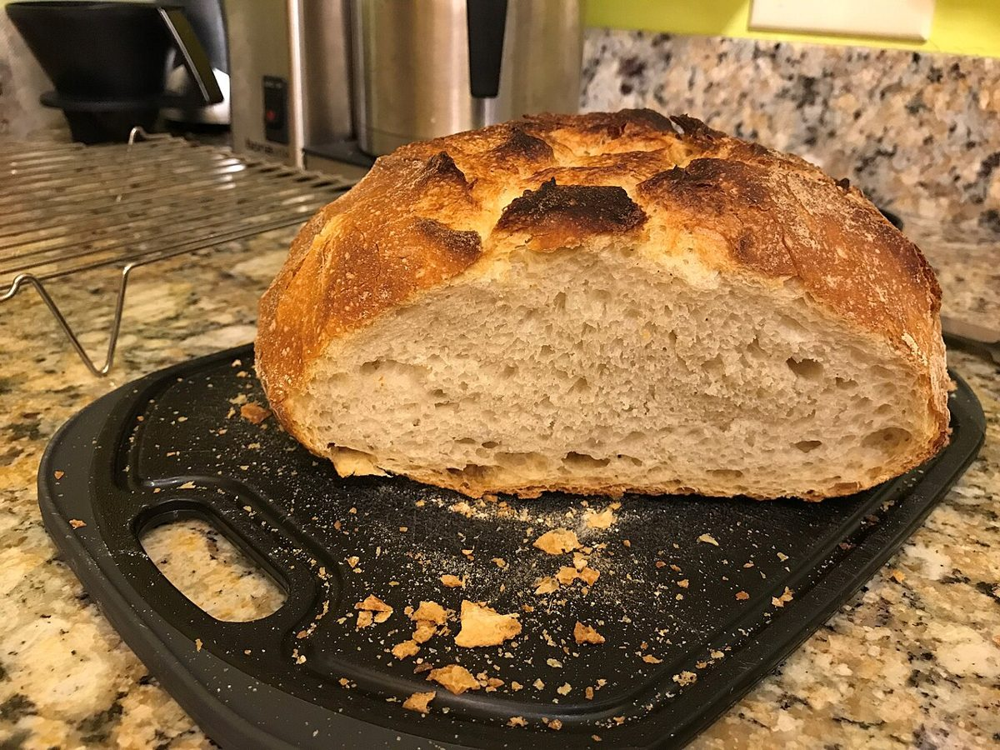

二個一
制作側の連想
「nico」から、ニコイチ。
店名の由来は分かりません。制作側は「nico」の響きから、「ニコイチ(二個で一つ)」という言葉を連想しました。二つのものを継いで、ひとつにする、という意味の言葉です。そこでこのサイトでは、写真を二枚ずつ継いだ「合体パネル」を7つ並べています。お店の理念・由来とは無関係な、制作側の連想です。
写真は北見市やお店のものではありません。撮影地不明のフリー素材で、お店で提供しているものでもありません。
合体パネル 01〜04
二枚で、ひとつ。
No.01

左豆を敷き詰めた一面。
右台にこぼれた豆。
No.02

左皿に重なる焼き色のパン。
右アーモンドをのせたパン。
No.03

左細長いパンの断面。
右丸いパンの断面。
No.04

左網で冷ます丸いパン。
右粉の渦模様の丸いパン。
ご案内
お店のこと(確認できたものだけ)
| 店名 | cafe nico Lodge(カフェ) |
|---|---|
| 所在地 | 〒090-0003 北海道北見市仁頃町２３２ |
| 電話 | 090-9088-7792 |
| 営業時間 | 準備中 |
| 定休日 | 準備中 |
| ご予約 | 準備中 |
| 駐車場 | 準備中 |
| SNS | Instagram @nico_lodge |